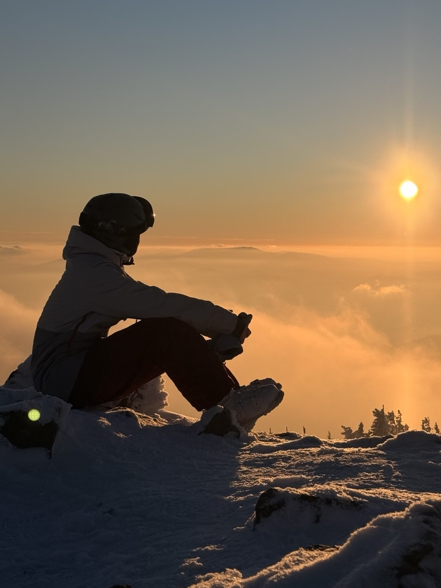
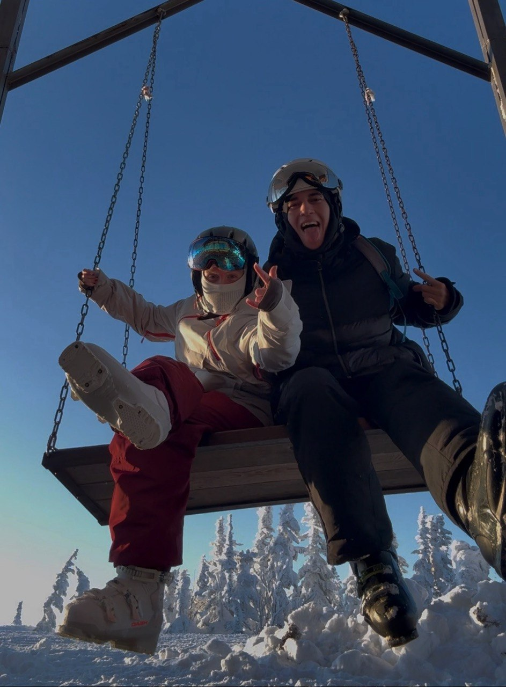
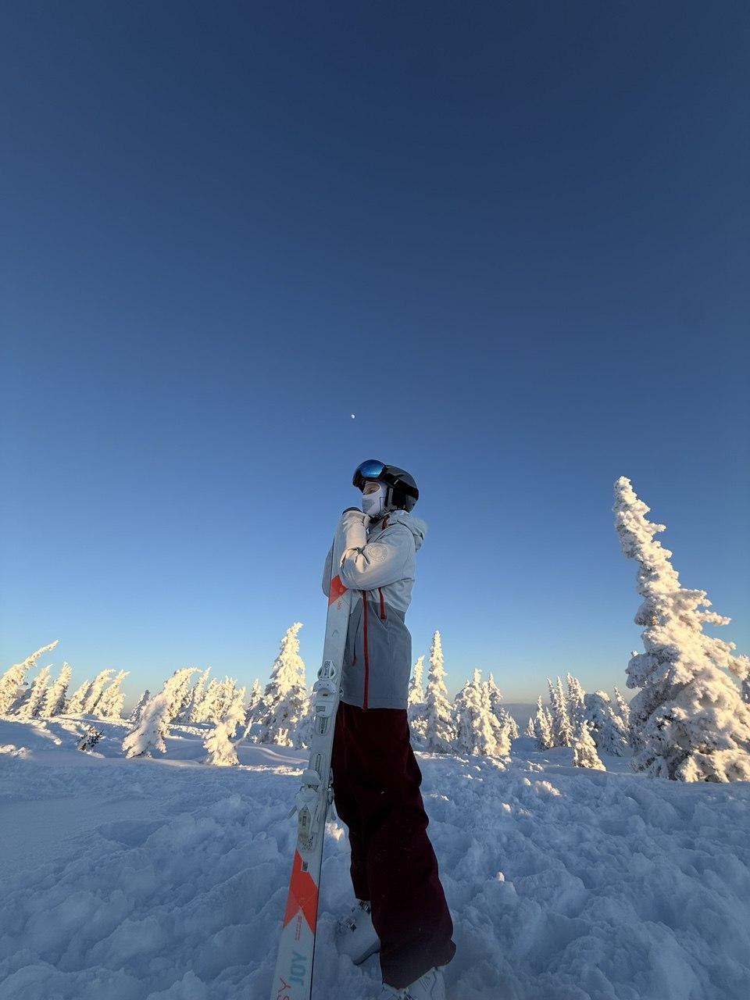
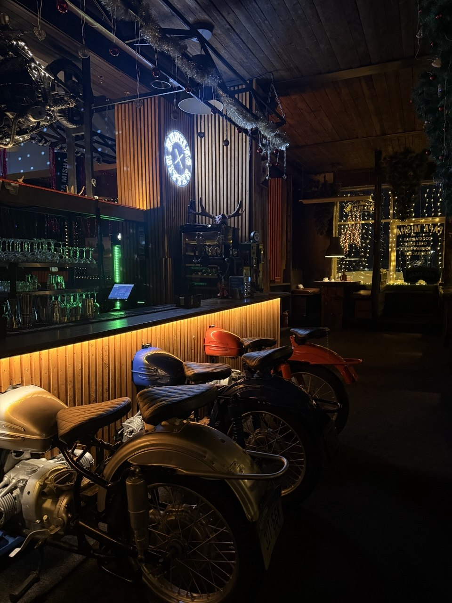

Утро, которое не хочется торопить
Свет в окне, завтрак, детали интерьера и сборы на склон. Покажем, как начинается день в вашем доме.
Я — vilkabutnot. Создаю контент для брендов и превращаю моменты жизни в яркие визуальные истории.
Посмотреть мои работы ↘


Три видео: атмосфера дома, горы и отдых вдвоём.
Пять сторис за поездку — с деталями и впечатлениями.
Один пост с фотографиями и историей нашего отдыха.

Готовые материалы, которые вы сможете публиковать у себя.
Моя сильная сторона — красочно показывать жизнь: через атмосферу, красивые детали и харизму в кадре.
Я специализируюсь на UGC — создаю фото и видео для брендов. В моём блоге есть место разным темам, а горные лыжи — часть моей жизни уже 15 лет.
Три примера моего контента.
Включите звук, чтобы почувствовать настроение.
Люди, места и моменты,
которые хочется сохранить.
В Шерегеш мы едем с молодым человеком. Оба катаемся на горных лыжах, любим живые эмоции и готовы сниматься в кадре.
Хочу показать ваш дом через нашу поездку: утро перед склоном, возвращение после катания и уютный вечер вдвоём.
Концепции будущих Reels.
Адаптирую под особенности вашего дома.
Свет в окне, завтрак, детали интерьера и сборы на склон. Покажем, как начинается день в вашем доме.
Живая love story: смех, объятия, совместные сборы и моменты вдвоём. Ваш дом — часть нашей истории.
Снежные куртки остаются у входа, в руках — горячий чай. Передадим ощущение отдыха и тепла после дня в горах.
Заезд 1 февраля, выезд 6 февраля
Три готовых вертикальных видео о поездке и вашем доме.
Ежедневно в течение пяти дней: пять сторис за поездку.
Фотографии и впечатления, собранные в историю отдыха.
Помимо публикаций в моём блоге, передам готовые фото и видео для размещения в ваших соцсетях. Количество фотографий, сроки передачи и условия использования согласуем до поездки.